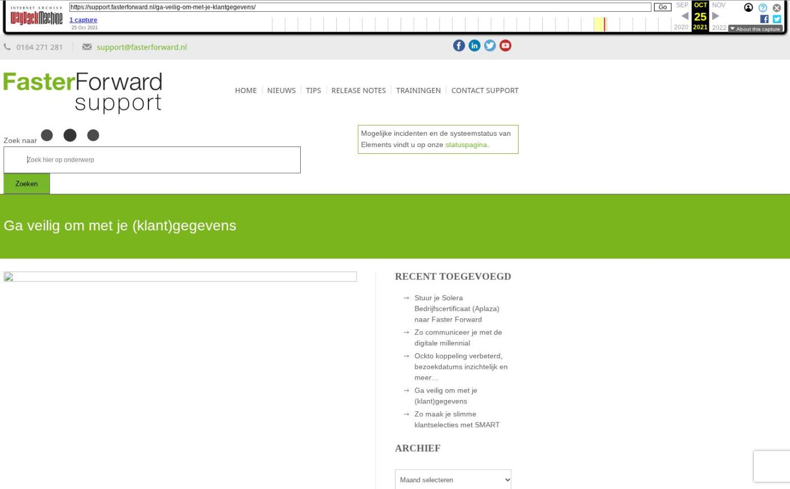

Elements en eBlinqx voorbereid op HDN25 release

Tekstinhoud
Op donderdag 22 mei zijn Elements en eBlinqx voorbereid op de HDN25 release. De HDN25 release zelf vindt plaats op zaterdag 24 mei.
Voorbereid op HDN25 release
Elements en eBlinqx zijn voorbereid op de HDN25 release die plaatsvindt op zaterdag 24 mei. Op deze manier zorgen we ervoor dat Elements/eBlinqx aansluit op de HDN standaard en je zonder problemen HDN berichten kunt ontvangen en verzenden. Functioneel en visueel zal je hier weinig van merken, maar 'onder de motorkap' is er veel werk verricht.
Voorbeelden van wijzigingen uit de HDN25 release:
Er zijn 3 nieuwe soort documenten toegevoegd, namelijk 'Verklaring van gemoedsbezwaren', 'Klantbeeldformulier' en 'Dubbele woonlastenformulier'. Het soort document 'Identiteitsbewijs 1e aanvrager in kleur' komt te vervallen. Hier was al een ander soort document voor in de plaats gekomen
Binnen 'Object' is er nu door HDN een splitsing gemaakt tussen nieuwbouw en bestaande bouw. Die hebben beiden hun eigen elementen. Dit heeft tot gevolg dat onder pand (nieuwbouw) het veld 'Bouwnr/-naam' is aangepast naar 'Bouwplan' en het veld 'Situatienr' is aangepast naar 'Bouwnummer'. Deze velden hebben ook vernieuwde tags gekregen (de oude tags blijven werken)
Aan de pop-up om een onderpand toe te voegen (onder Partijen & Objecten) is het veld 'BAG-indentificatienummer' onder Kadaster toegevoegd. Daarnaast wordt deze pop-up nu ook getoond bij het toevoegen van een object in de polis schadeverzekering. Voorheen werd er hier een verouderde pop-up getoond
Onder het hypotheekproduct – tabblad Wonen – Energie vervallen de velden 'Registratiedatum', 'Berekeningstype', 'Energieprestatieindex' en 'Energieprestatie forfaitair'. Mocht er iets in deze velden ingevuld staan dan wordt dit met deze release in een registratie gezet. Ook zijn de mogelijke keuzes onder 'Verduurzaming toepassen' veranderd, naar '01 EBV, 02 EBB en 03 EBV en EBB'
Het type leningdeel 'Verhoging (hoger geldbedrag)' is komen te vervallen en hierdoor niet meer te selecteren in het leningdeel van de hypotheek
Geplaatst op 20 mei 2025
Laatste 5 releasenotes
Nog meer data en documenten vergelijken »
Gemakkelijk data en documenten vergelijken »
Verbeteringen boekhouding en facturatie »
Verbeteringen gespreksopname en onder de motorkap »
Verbeteringen onder de motorkap en gespreksopnames »